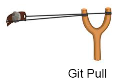
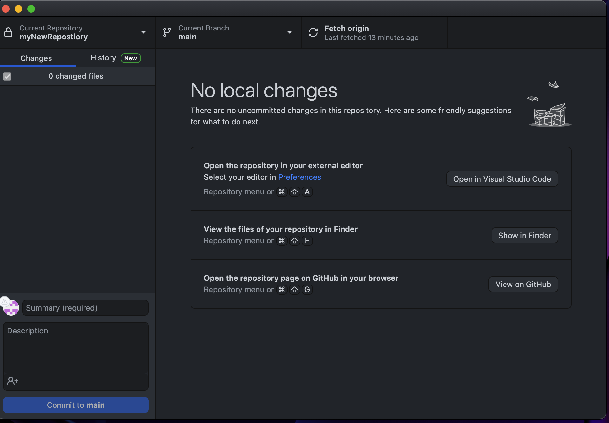
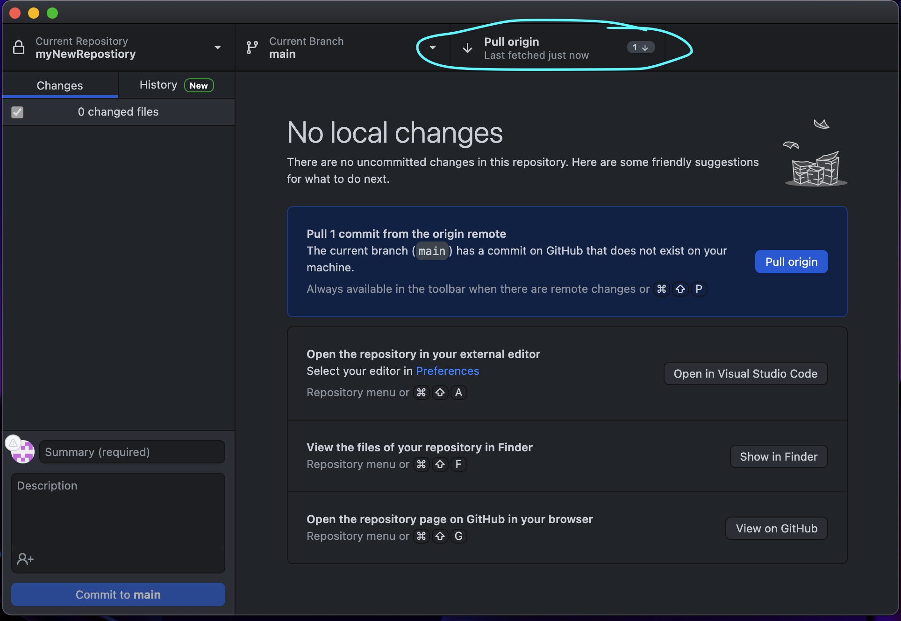
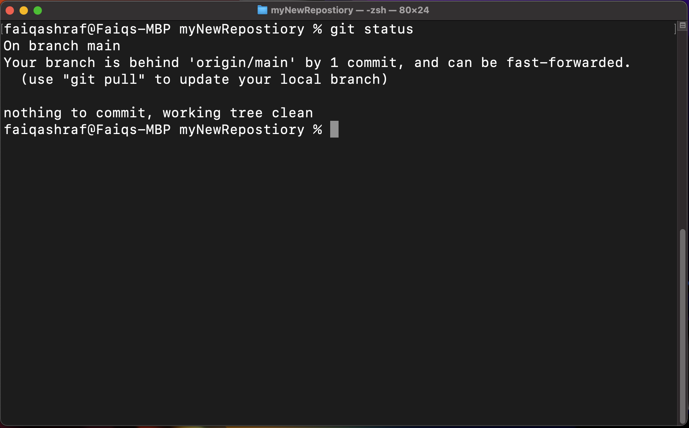
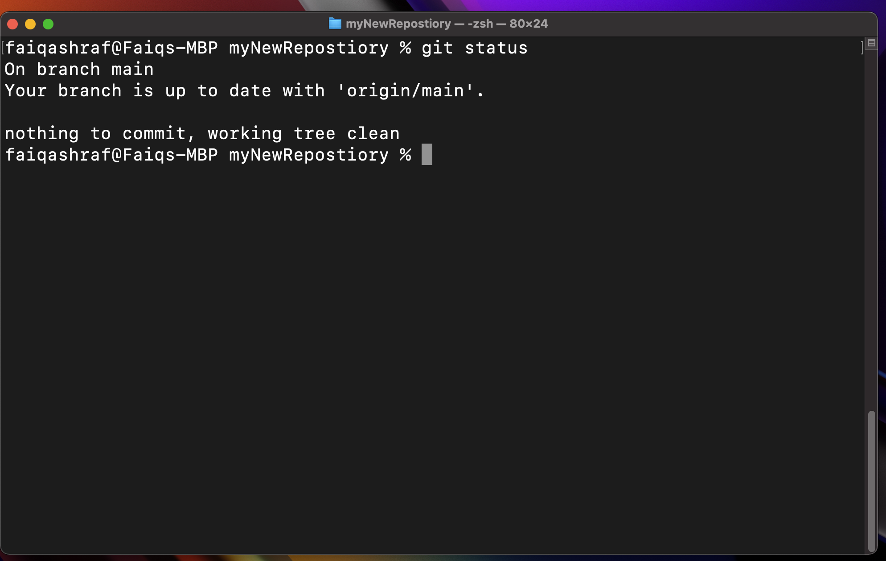
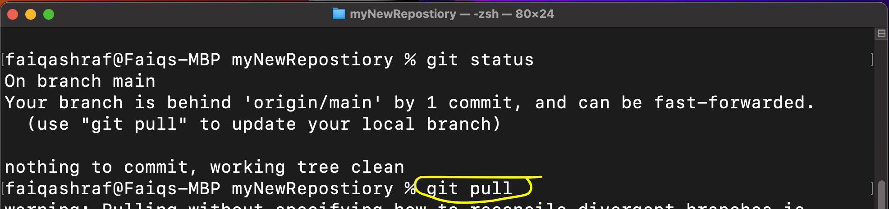
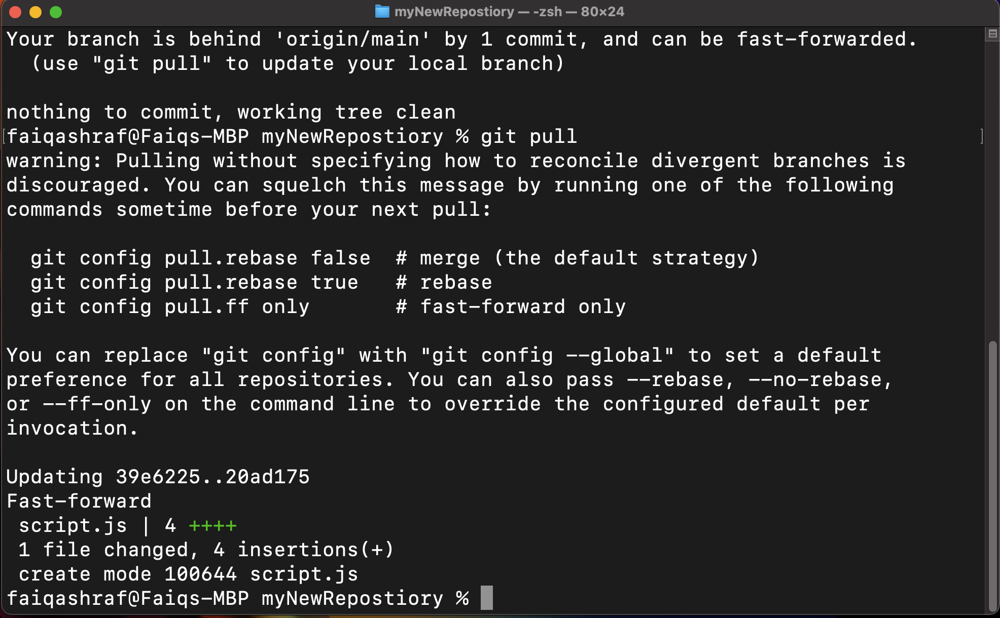

Lesson 3-2
Git Pull - What is it/How to do it
So our first step is git pull. Pulling is basically what you did when you cloned
the repository. This step is the least common one you will do of the big 3, however, it is important in
preventing merge conflicts, which I will explain in a later chapter.
The process of doing a git pull is when either your local machine or the server
your working on needs to get the most up-to-date versions of all of the files in the repository. As
illustrated in the graphic above, the idea is that you are loading up your slingshot, or in our case, our
local/server side folder with the new versions of a file.
I personally suggest that you frequently do a git pull so that you don't have
outdated files. At a minimum, do one BEFORE you start working! Again, I'll explain my
reasoning more later. Let me show you how to do a git pull on both GitHub Desktop
and Terminal.
GitHub Desktop
- Open up GitHub Desktop.
- Click the "fetch origin" button at the top right corner. (see Figure 3A)  Figure 3A: This is what the window should look like after a Git Pull, and sometimes, you need to manually check for a newer version of the repository, and that will also make the window appear this way.
- If there a newer version on Github.com, it will show something similar to Figure 3B. If it doesn't show anything different than Figure 3A, then you're good to go!
- Click "Git Pull" in either part of the window. (see Figure 3B)  Figure 3B: The button to click is circled for your convenience. You can click either one labeled "git pull".
- Once it is done pulling, it will look like Figure 3A.
Terminal
- Open terminal and navigate to your repository via the cd command.
- You can check the status of the repo by typing git status. If it looks like figure 3C, you need to do a pull. If it looks like Figure 3D, you are good to go!  Figure 3C: You'll see something like this if there's a newer version of the repository available.  Figure 3D: You should see this if there isn't a newer version available.
- To do the actual pull, type in git pull and click enter. (see Figure 3E)  Figure 3E: Just simply type git pull to do the deed of pulling from github.com.
- Once you did that, it should look like Figure 3F. It will tell you what files it added/removed and how many lines were modified.  Figure 3F: It will show some different pieces of metadata and other jibber jabber that even I don't know the meaning of, but it is working properly.
- To be sure everything worked, you can type git status again. It should like figure 3D.
That is all that there is to pulling. You'll notice that these commands all start with git because they run in the Git language. In the next section, we will explorer how to do commits, and why they are important.